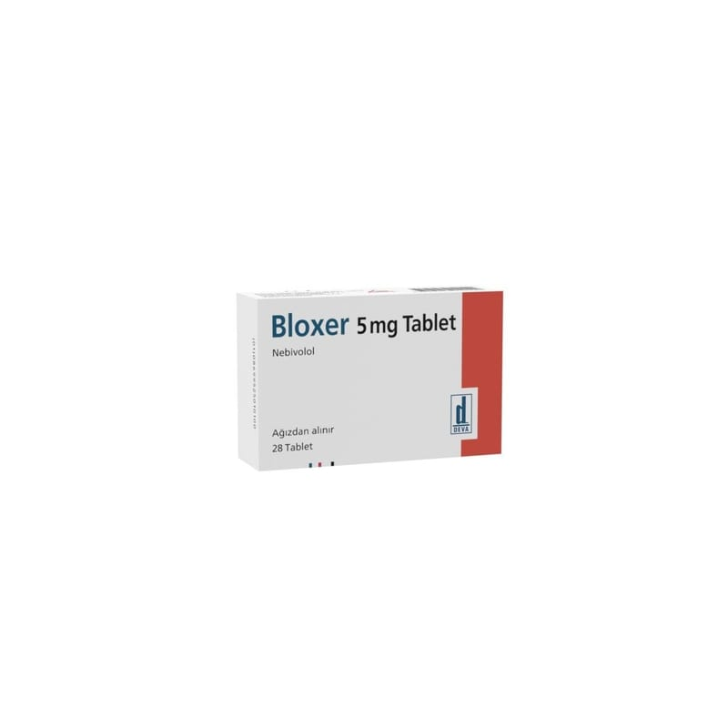

Bloxer 5 mg Tablet, 28 Adet

Ne için kullanılır
KT · Bölüm 1BLOXER, bir yüzü çentikli, beyaz, yuvarlak, bikonveks tabletler halindedir. Her karton kutuda 28 veya 84 tablet içeren ambalajlar olarak kullanıma sunulmuştur.
BLOXER 5 mg nebivolol (2,5 mg d-nebivolol ve 2,5 mg l-nebivolol olmak üzere) içerir. Nebivolol selektif beta-blokör ilaçlar grubunda (kardiyovasküler sistem üzerinde seçici etkili) yer alan kardiyovasküler bir ilaçtır. Kalp hızındaki artışı önler, kalbin pompalama gücünü kontrol altına alır. Ayrıca kan damarları üzerinde genişletici etkiye sahiptir ve bu etkisi ile kan basıncında düşmeye yardımcı olur.
BLOXER yüksek kan basıncının (hipertansiyon) tedavisinde kullanılır. Ayrıca 70 yaş ve üzerindeki hastalarda, hafif-orta düzeyde kronik kalp yetmezliğinin tedavisinde diğer tedavilere ilave olarak kullanılır.